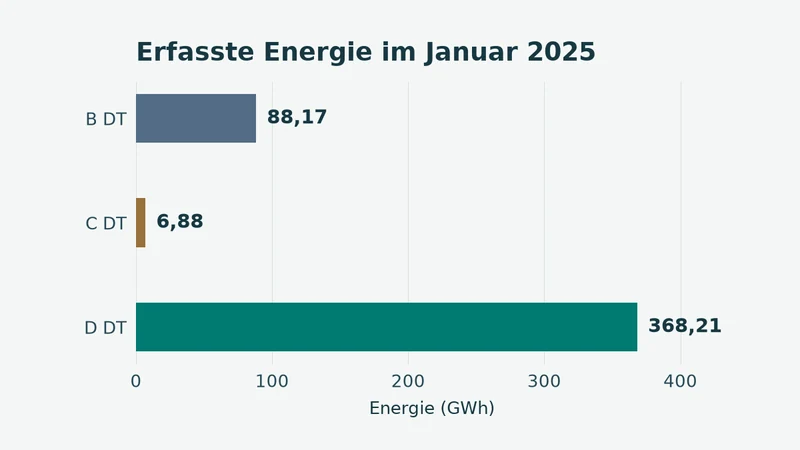

Stromerzeugung · SQL-Datenanalyse / EIGENSTÄNDIGES PROJEKT
Einspeisezeitreihen aus Emsland mit SQL analysieren
Wie verteilt sich die erfasste Energie im Januar 2025 auf die drei ausgewählten Einspeisezeitreihen des Standorts Emsland?


Grafik vergrößern ↗01 / MEIN BEITRAG
Umsetzung
- Ein relationales SQLite-Schema mit Schlüsseln und einer View für die Intervallenergie aufgebaut.
- Neun SQL-Abfragen für Vollständigkeit, Aggregation, Rangfolgen und Zeitreihenvergleiche erstellt. Die Auswertung entstand mit KI-Unterstützung.
METHODIK
Daten und Vorgehen
- 2.232 Beobachtungen aus 744 Stunden je Reihe. Die Quelldaten verwenden die mitteleuropäische Zeit (MEZ) und werden zusätzlich in UTC gespeichert.
- Die mittlere Leistung in MW wird mit der Intervalldauer von einer Stunde multipliziert. Das ergibt die Intervallenergie in MWh.
- LAG vergleicht zwei aufeinanderfolgende Stundenmittel innerhalb derselben Reihe. Die SQL-Energiesummen wurden mit den Originalwerten unabhängig abgeglichen.
ERGEBNIS
Ergebnisse im Kontext
79,48 % der erfassten Energie der drei ausgewählten Reihen entfallen auf D DT.
| B DT | 88,17 GWh |
|---|---|
| C DT | 6,88 GWh |
| D DT | 368,21 GWh |
| Stundenwerte insgesamt | 2.232 |
Die Reihe D DT enthält in 537 von 744 Stunden einen positiven Wert. Das höchste veröffentlichte Stundenmittel für D DT beträgt 912 MW.